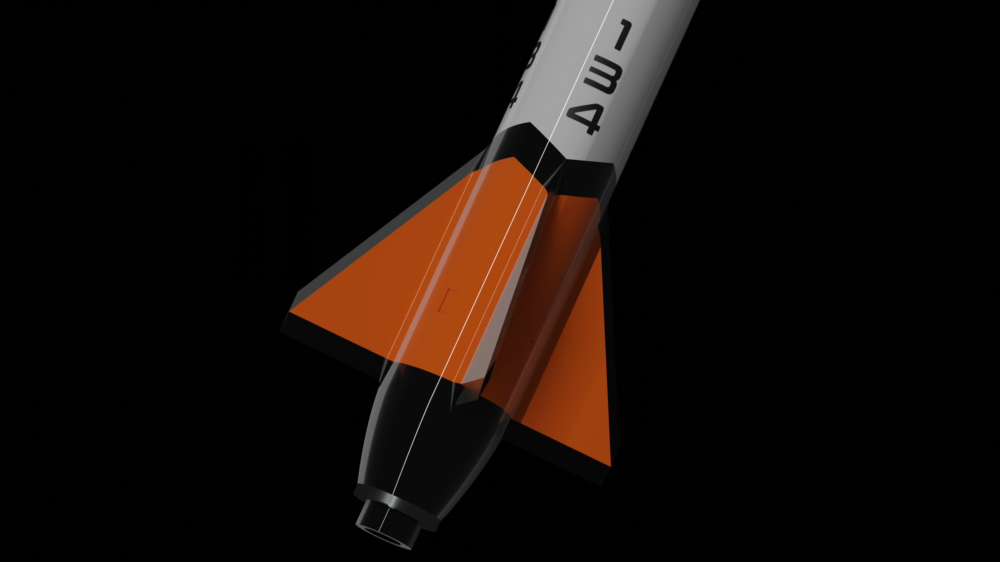
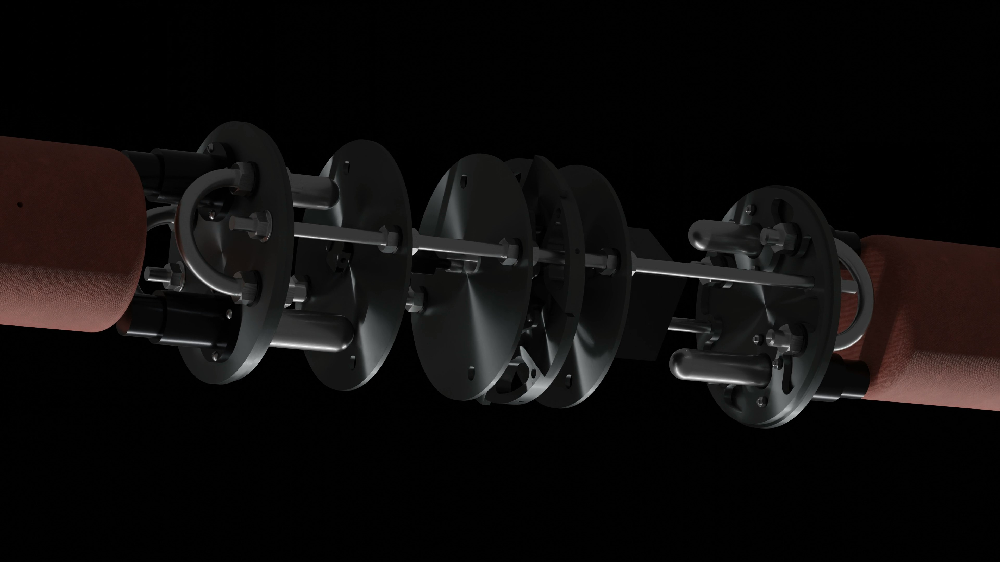

Spaceport Team 134

In their first time participating in the prestigious Spaceport America Cup (SAC), the UNSW Rocketry Team came third in the 30,000ft category and won the Best Video Challenge. The team managed to reach an altitude of 27,233 feet with their rocket Archangel.
Air Brakes

Our air brake system was designed and manufactured from start to finish in-house. They were meticulously designed to propel the team closer to winning SAC, however during test flights, the team realised that we were undershooting, and as a result decided to remove it. This gave us a mass reduction of 1.5 kg and resulted in us getting closer to the desired altitude.
Avionics

Inside the rocket were two flight computers measuring barometric and inertial data, which tells us how high the rocket flew. These Computers also trigger the separation of the rocket sections, allowing the parachutes out. We also use a GPS telemetry unit to tell us where the rocket is at all times, placed inside a fibreglass nose-cone for radio transparency.